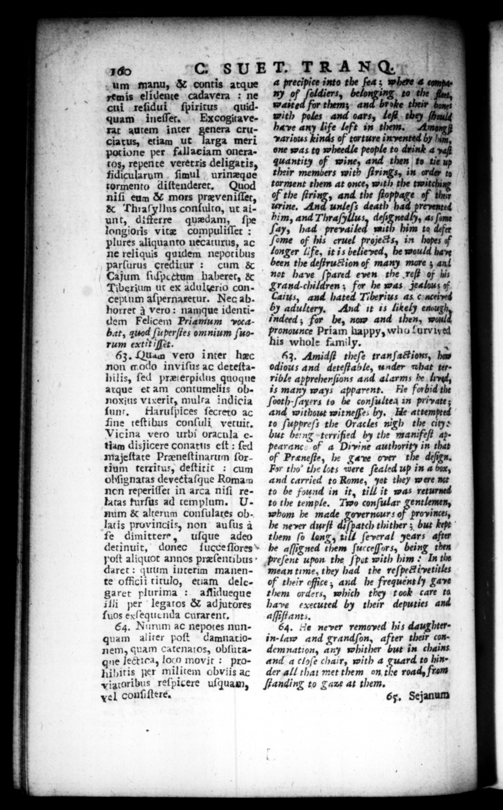

160 um manu, & contis atque remis elidente cadavera : ne cui reſidui ſpiritus quid quam ineſſet. Excogitaverat autem inter era cruciatus, etiam ut larga meri pot ione per fallaciam oneratos, repente veretris deligatis, fidicularum ſimul urinzque tormento diſtenderet, Quod niſi eum & mors præveniſſet, & Thraſyllus conſulto, ut aiunt, difterre quædam, ſpe longioris vitæ compuliſſet: plures aliquanto necaturus, ac ne reliquis quidem nepotibus parſurus creditur: cum & Cajum ſuſpectum baberec, & Tiberium ut ex adulterio conceptum aſpernaretur. Nec ab. Horrer à vero: namque identidem Felicem Priamum vocabat, quod ſuperſtes omnium ſuorum ext i itt. a 63. Quam vero inter hec non modo inviſus ac deteſtahilis, fed preterpidus quoque atque et am contumelits obnoxius vixerit, multa indicia unt. Haruſpices ſecreto ac fine teſtibus conſuli vetuit. Vicina vero urbi oracula etiam disJicere conatns eſt : ſed majeſtate Praneſtinarum ſortium terxitus, deſtitit : cum obſignatas deveetaſque Roman non reperiſſet in arca niſi reHas furſus ad templum. U. num & alterum Conſulares oblatis provinciis, non auſus à fe dimittere, uſque adeo . G SUET. T RANG. the — "gs in order to torment them at once, with the twitchi of the firing, and the froppage of their 2 An = 5 4 * 7 im, and Thra ned, 4s ſome ſay, had — with him to ſome of his cruel projets, in hopes of longer life, it is believed, he would ham been the deſtruction of many more ; and not have ſpared even the reſt of his Crand-. children; for he was jealous of Caius, and hated Tiberius as. cinceryed by adultery, And it is likely enoug indeed; for be, now and then, pronounce Priam happy, who turviyed his whole family. * 63. Amidſt theſe tranſa#ions, has odious and deteſtable, under what terrible appreherſions and alarms he li, is many ways apparent. He forbid the ſooth-ſayers to be conſultea in private; and without witneſſes by, He attempted to ſuppreſs the Oracles nigh the ci) but berng 9, = by the manifeſt appearanc of a Divine — in that of Preneſte, he Cave over the deſign. For tho the lots were ſealed up in @ box, and carried to Rome, yet they were nt to be found in it, till it was returned to the temple. Two conſular gentlemen, whom he made Tovernours of provinces, he never durſt diſpatch thither ;, but kept them ſo lang, till ſeveral years after derinuit, donec ſucęe ſſores be aſſigned them ſucceſſors, being then poſt aliquot annos præſentibus daret : quum interim manente officii titulo, etiam delegaret plurima: affidueque ill; per legatos & adjutores ſuos exſequenda curarent. Eg. Nurum ac nepotes nunquam aliter poſt damnationem, quam catenatos, obſutane lectica, loco movit : prohibitis per militem obviis ac viatoribus reſpicere uſquam, vel conſiſtere. Preſent upon the ſpot with him In the mean time, they had the reſpect᷑ ixetitles of their office ; and he frequently gave them orders, which they took care ta have executed by their deputies aſpſftants, 64. He never removed his daughterin-law and grandſon, after their condemnation, any whither but in chains and a cloſe chair, with a guard to hinder all that met them on. the road, from ſtanding to Tax at them. 65, Sejanum
